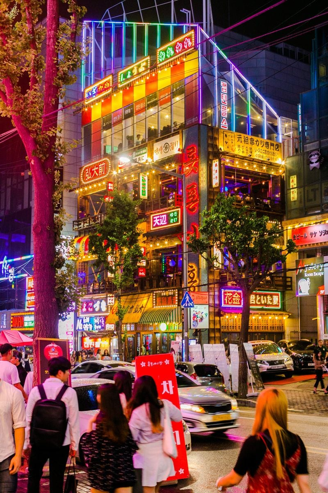
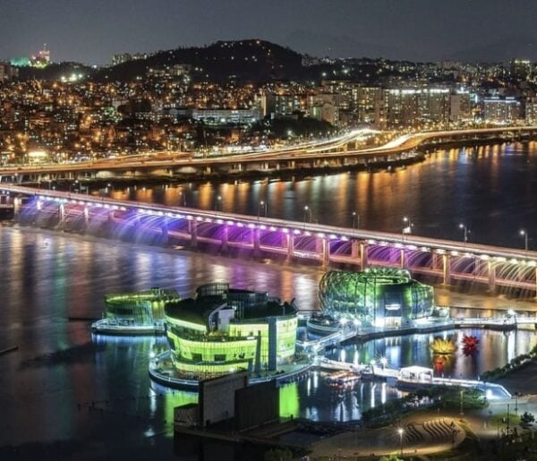

Gyeongbokgung Palace
Step into the grandeur of Korea’s Joseon dynasty at Gyeongbokgung, the country’s most iconic palace. Watch the colorful changing of the guard, wander through serene courtyards, and feel the weight of centuries within its stone walls.

Hongdae Nightlife
When the sun sets, Hongdae comes alive. With indie bands, quirky cafés, and neon-lit clubs, this student district is the pulse of Seoul’s youth culture—perfect for night owls and fun-seekers.
Bukchon Hanok Village
Wander through a living museum of traditional Korean houses. Nestled between modern buildings, Bukchon offers a glimpse into Seoul’s architectural past, with artists’ studios, tea houses, and quiet alleyways.

Han River Parks
Stretching across the city, the Han River is Seoul’s natural heartbeat. Locals jog, picnic, and bike along its banks. At night, bridges light up and river cruises offer stunning skyline views.
Myeong-dong Shopping District
One of Asia’s busiest shopping districts, Myeong-dong is a paradise for fashion lovers and skincare enthusiasts. Explore street stalls, global brands, and the latest K-beauty trends.